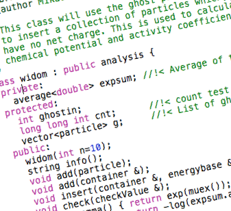

KDYS MY Project
Week 2 -March 2012
Week 2 -March 2012
The HARD parts, these are the parts you can see and touch.
The bits and bytes, the computer code, Software cannot be touched or seen !
Again, this concept can be understood by comparing a computer to our own bodies and our senses. If our nose is the hardware, our sense of smell is the software, which is connected to the brain (CPU)! Similarly, our eyes are hardware, while sight is software.

A computer can’t think for itself, in order for it to do anything it needs to be told what to do and how to do it.
It has been “programmed” by a human, these programmes or instructions are known software.

?
Software can be distributed on a CD or downloaded from the internet.